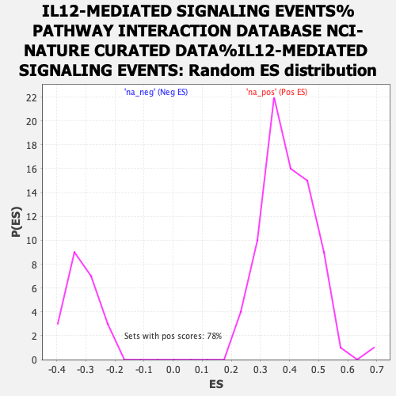

| | | Dataset | MesenchymalvsImmunoreactive_edger_ranks |
| Phenotype | NoPhenotypeAvailable |
| Upregulated in class | na_neg |
| GeneSet | IL12-MEDIATED SIGNALING EVENTS%PATHWAY INTERACTION DATABASE NCI-NATURE CURATED DATA%IL12-MEDIATED SIGNALING EVENTS |
| Enrichment Score (ES) | -0.7925496 |
| Normalized Enrichment Score (NES) | -2.52711 |
| Nominal p-value | 0.0 |
| FDR q-value | 0.0 |
| FWER p-Value | 0.0 |
Table: GSEA Results Summary
 Fig 1: Enrichment plot: IL12-MEDIATED SIGNALING EVENTS%PATHWAY INTERACTION DATABASE NCI-NATURE CURATED DATA%IL12-MEDIATED SIGNALING EVENTS
Fig 1: Enrichment plot: IL12-MEDIATED SIGNALING EVENTS%PATHWAY INTERACTION DATABASE NCI-NATURE CURATED DATA%IL12-MEDIATED SIGNALING EVENTS
Profile of the Running ES Score & Positions of GeneSet Members on the Rank Ordered List
| SYMBOL | RANK IN GENE LIST | RANK METRIC SCORE | RUNNING ES | CORE ENRICHMENT | | 1 | HLX | 624 | 6.340 | -0.0160 | No |
| 2 | GADD45B | 986 | 4.106 | -0.0234 | No |
| 3 | FOS | 1163 | 3.479 | -0.0207 | No |
| 4 | IL18R1 | 1216 | 3.300 | -0.0101 | No |
| 5 | SPHK2 | 1840 | 1.952 | -0.0450 | No |
| 6 | IL2RA | 4924 | 0.269 | -0.2580 | No |
| 7 | MAPK14 | 5320 | 0.188 | -0.2846 | No |
| 8 | IL18 | 5561 | 0.142 | -0.3007 | No |
| 9 | MAP2K6 | 6491 | 0.009 | -0.3652 | No |
| 10 | STAT3 | 7223 | -0.088 | -0.4156 | No |
| 11 | TYK2 | 7340 | -0.106 | -0.4232 | No |
| 12 | IL1R1 | 7361 | -0.108 | -0.4241 | No |
| 13 | MTOR | 7982 | -0.208 | -0.4663 | No |
| 14 | ATF2 | 8092 | -0.227 | -0.4729 | No |
| 15 | NFKB2 | 8933 | -0.385 | -0.5296 | No |
| 16 | CCL3 | 10460 | -0.785 | -0.6322 | No |
| 17 | MAP2K3 | 11202 | -1.040 | -0.6792 | No |
| 18 | RAB7A | 11219 | -1.051 | -0.6758 | No |
| 19 | IL1B | 12100 | -1.459 | -0.7306 | No |
| 20 | RIPK2 | 12679 | -1.845 | -0.7628 | No |
| 21 | STAT6 | 12693 | -1.854 | -0.7558 | No |
| 22 | RELB | 12882 | -2.007 | -0.7602 | No |
| 23 | IL12RB2 | 13349 | -2.580 | -0.7814 | Yes |
| 24 | NFKB1 | 13372 | -2.608 | -0.7717 | Yes |
| 25 | STAT5A | 13461 | -2.771 | -0.7659 | Yes |
| 26 | RELA | 13553 | -2.920 | -0.7597 | Yes |
| 27 | GADD45G | 13592 | -2.985 | -0.7495 | Yes |
| 28 | IL12A | 13638 | -3.093 | -0.7393 | Yes |
| 29 | EOMES | 13758 | -3.369 | -0.7330 | Yes |
| 30 | SOCS1 | 13861 | -3.672 | -0.7243 | Yes |
| 31 | GZMB | 13981 | -4.137 | -0.7147 | Yes |
| 32 | CCL4 | 14041 | -4.399 | -0.6999 | Yes |
| 33 | LCK | 14059 | -4.528 | -0.6816 | Yes |
| 34 | CD4 | 14092 | -4.708 | -0.6635 | Yes |
| 35 | CD3G | 14147 | -5.055 | -0.6455 | Yes |
| 36 | CD3E | 14156 | -5.120 | -0.6240 | Yes |
| 37 | CD8B | 14162 | -5.161 | -0.6021 | Yes |
| 38 | CD3D | 14203 | -5.447 | -0.5815 | Yes |
| 39 | JAK2 | 14213 | -5.556 | -0.5582 | Yes |
| 40 | STAT4 | 14216 | -5.597 | -0.5342 | Yes |
| 41 | CD8A | 14255 | -6.097 | -0.5106 | Yes |
| 42 | GZMA | 14300 | -6.737 | -0.4846 | Yes |
| 43 | STAT1 | 14316 | -6.964 | -0.4557 | Yes |
| 44 | IL2RB | 14340 | -7.522 | -0.4249 | Yes |
| 45 | TBX21 | 14349 | -7.786 | -0.3919 | Yes |
| 46 | CD247 | 14353 | -7.844 | -0.3584 | Yes |
| 47 | CCR5 | 14375 | -8.422 | -0.3236 | Yes |
| 48 | IL2RG | 14389 | -9.104 | -0.2853 | Yes |
| 49 | B2M | 14392 | -9.232 | -0.2456 | Yes |
| 50 | HLA-DRB1 | 14409 | -10.456 | -0.2017 | Yes |
| 51 | HLA-DRA | 14422 | -11.387 | -0.1535 | Yes |
| 52 | IL12RB1 | 14424 | -11.872 | -0.1025 | Yes |
| 53 | HLA-A | 14426 | -11.943 | -0.0511 | Yes |
| 54 | FASLG | 14429 | -12.211 | 0.0013 | Yes |
Table: GSEA details [plain text format]

Fig 2: IL12-MEDIATED SIGNALING EVENTS%PATHWAY INTERACTION DATABASE NCI-NATURE CURATED DATA%IL12-MEDIATED SIGNALING EVENTS: Random ES distribution
Gene set null distribution of ES for IL12-MEDIATED SIGNALING EVENTS%PATHWAY INTERACTION DATABASE NCI-NATURE CURATED DATA%IL12-MEDIATED SIGNALING EVENTS